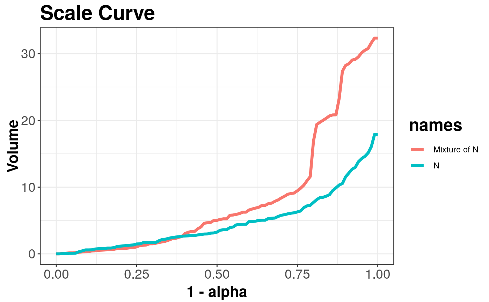

Scale curve
scaleCurve.RdDraws a scale curve: measure of dispersion.
scaleCurve(x, y = NULL, alpha = seq(0, 1, 0.01), name = "X", name_y = "Y", title = "Scale Curve", depth_params = list(method = "Projection"))
Arguments
| x | Multivariate data as a matrix. |
|---|---|
| y | Additional matrix with multivariate data. |
| alpha | Vector with values of central area to be used in computation. |
| name | Name of matrix X used in legend. |
| name_y | Name of matrix Y used in legend. |
| title | title of the plot. |
| depth_params | list of parameters for function depth (method, threads, ndir, la, lb, pdim, mean, cov, exact). |
Value
Returns the volume of the convex hull containing subsequent central points of X.
Details
For sample depth function \( D({x}, {{{Z}} ^ {n}}) \), \( {x} \in {{{R}} ^ {d}} \), \( d \ge 2 \), \( {Z} ^ {n} = \{{{{z}}_{1}}, ..., {{{z}}_{n}}\} \subset {{{R}} ^ {d}} \), \( {{D}_{\alpha}}({{{Z}} ^ {n}}) \) denoting \(\alpha\) --- central region, we can define the scale curve \( SC(\alpha) = \left(\alpha, vol({{D}_{\alpha}}({{{Z}} ^ {n}})\right) \subset {{{R}} ^ {2}} \), for \( \alpha \in [0, 1] \)
The scale curve is a two-dimensional method of describing the dispersion of random vector around the depth induced median.
Function scalecurve for determining the volumes of the convex hull containing points from alpha central regions, uses function convhulln from geometry package.
The minimal dimension of data in X or Y is 2.
ggplot2 package is used to draw a plot.
References
Liu, R.Y., Parelius, J.M. and Singh, K. (1999), Multivariate analysis by data depth: Descriptive statistics, graphics and inference (with discussion), Ann. Statist., 27, 783--858.
Chaudhuri, P. (1996), On a Geometric Notion of Quantiles for Multivariate Data, Journal of the American Statistical Association, 862--872.
Dyckerhoff, R. (2004), Data Depths Satisfying the Projection Property, Allgemeines Statistisches Archiv., 88, 163--190.
See also
depthContour and depthPersp for depth graphics.
Examples
library(mvtnorm) x <- mvrnorm(n = 100, mu = c(0, 0), Sigma = 3 * diag(2)) y <- rmvt(n = 100, sigma = diag(2), df = 2) scaleCurve(x, y, depth_params = list(method = "Projection"))#> Object of class: ScaleCurveList# Comparing two scale curves # normal distribution and mixture of normal distributions x <- mvrnorm(100, c(0, 0), diag(2)) y <- mvrnorm(80, c(0, 0), diag(2)) z <- mvrnorm(20, c(5, 5), diag(2)) scaleCurve(x, rbind(y, z), name = "N", name_y = "Mixture of N", depth_params = list(method = "Projection"))#> Object of class: ScaleCurveList